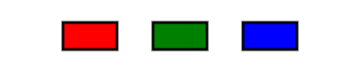

We've previously used functions like dist() to produce a number for use within an if statement. We first get the distance and then make another comparison to check if the distance is small or large. We've also seen that functions don't necessarily have to return a number. They can return a true or false value that tells you something useful toward your program
In p5, the best example of this is the isKeyDown() function. In the background, p5 is keeping track of which keys are currently being held down. Instead of having individual variables representing every single key, the isKeyDown() function will tell you if a key is being held or not. We simply provide the key and it will return a true or false.
For example: If we needed to know if the up-arrow was being held down, we could use this line of code:
let upArrowHeld = isKeyDown( 38 ); //up-arrow has a keycode of 38
Depending on the state of the up-arrow when this runs, a value of true or false would be assigned to the isUp variable.
You may have noticed that Mr. Sacco pulled the value of 38 out of nowhere when we were focused on the up arrow. The parameter for the isKeyDown function is the key's keycode, which is an integer that has been chosen to represent the given key. The letter keys are related to the ASCII table. We can explore them using this link and hitting keyboard keys:
Open the Key Tracker workspace in CodeHS
The draw function is simple, it picks a white fill then calls the drawLetterBox() function that has been included for simplicity. What we want to focus on is the fill() statement that precedes it. It's currently producing a white box when the letter W is drawn
fill("white"); //Decide the color of W the box
drawLetterBox("W", 100, 75);
Modifying that line will allow us to choose its color.
fill("red"); //Decide the color of W the box
drawLetterBox("W", 100, 75);
Our Goal: Instead of having to hardcode a white or red fill before drawing the box, we are going to make our program choose between the two fills. A red fill should indicate that the W key is being held down, while a white fill would indicate that it isn't. The isKeyDown() function will be critical to this, as it tells us exactly what we need.
The keyCode for the W key is 87, so we could check during the draw() function if the w is being held by calling it.
let wDown = keyIsDown(87); //check if the W is currently held down
keyIsDown() returns a boolean value directly. This means that the wDown variable could then be used in an if statement to choose a red fill or a white fill for the square to be drawn with.
if ( wDown == true )
fill("red");
else
fill("white");
drawLetterBox("W", 100, 75);
Or, a shorter way would be to realize that the keyIsDown() function returns a boolean, so it can run an if statement directly.
if ( keyIsDown(87) ) //boolean function running the if statement directly
fill("red");
else
fill("white");
drawLetterBox("W", 100, 75);
By calling the function directly from the if statement, there is no need to use a variable that is then compared with true. The function provides the true/false directly.
Modify your sketch to use the if statement above to help it choose a red fill for the square when W is pressed. When you've finished, run your sketch to test and see if it functions. Make sure to click on the canvas before pressing the W button and watching for a response. The W square should be red for as long as you hold the W key. Releasing it should cause it to return to white.
Click in the canvas below to trigger the key tracking and notice how it tracks as you press WASD on your keyboard.
Open the Mouse In Circle workspace.
Look at the provided draw() function and you'll see that a circle is being drawn whose fill depends on a boolean isMouseInCircle() function:
if( isMouseInCircle(60, 60, 40) ) fill(255,0,99); else fill(255); circle(60,60,40);
Notice that the parameters given to the isMouseInCircle() function are the x, y, and radius of the circle that is about to be drawn. It is intended to take that information and return true if the mouse (mouseX, mouseY) is currently within the defined circle.
But this time the function is not a p5 function, it's one that is included at the top of the window:
//Returns true if (mouseX, mouseY) is within
//the circle at (x,y) with a radius of r
function isMouseInCircle( x, y, r ) {
return true;
}
Notice that it is currently always returning true. If you run the sketch, you'll see that this causes the circle to be drawn in magenta. If you modify it to return false, you will see that causes the circle to turn white.
Our job will be to write the isMouseInCircle() function so that it works properly. We have done this kind of calculation before. We need to:
- Calculate the Distance from (mouseX, mouseY) to the center of the circle
- Compare that distance with the radius of the circle
- Points within the circle have a distance smaller than the radius
We can see from the draw function that the circle will be at (60,60) and have a radius of 40, but we don't want to use those values directly. We are writing a generic method that should work for all circles, so we should use the parameters that we've been given instead. Change the isMouseInCircle() to look like this:
//Returns true if (mouseX, mouseY) is within
//the circle at (x,y) with a radius of r
function isMouseInCircle( x, y, r ) {
//Calculate the Distance from (mouseX, mouseY)
//to the center of the circle
let distToCenter = dist(x, y, mouseX, mouseY);
//Points within the circle have a distance to
//center that is smaller than the radius
if( distToCenter < r)
return true;
else
return false;
}
You can see that we are following the steps to calculate the distance and compare it with the radius, but we don't see the values (60,60) or 40 anywhere. We are only using the variables that represent them. When the function is called during draw, the actual values are provided: isMouseInCircle(60, 60, 40). That is the moment that JavaScript assigns values to the variables to be used.
Test your program by running it and using the mouse to hover over the circle. It should respond by turning magenta.
Notice that there are two other circles commented out at the bottom of the draw function:
// circle(200,150,80);
// circle(130,260,20);
Your task is to modify draw so that those two circles are also painted with the ability to hover over them and turn them colors. This will involve putting a fill-choosing if statement before each of them. Make sure to update the parameters to match the circle that you're drawing.
If done properly, you should be able to change the color of all three circles independently by moving the mouse over them.
We've created functions that return values before. We can use this technique to create our own boolean functions for use in our program.
If you look at the draw function you'll see the same code four times. First a color is selected based on the function mouseInBox, and then a rectangle is drawn. Right now the mouseInBox function always returns true, so the color for all boxes is red. If you changed it to return false, all of the rectangles would be green.
Your job is to fix the mouseInBox function. You should look at the parameters x,y,w, and h and think about where mouseX and mouseY fall in relation to that rectangle. For example: Since we're in rectMode(CENTER), the left side of the rectangle would have an x value of x - w/2. If the mouse were in the box, then mouseX should be larger than that. A flawed attempt to fix mouseInBox would look like so:
function mouseInBox(x, y, w, h) {
if(mouseX > x - w/2)
return true;
else
return false;
}
If you try this, you'll see that this only returns true when the mouseX is to the right of the left side of each box. This is not enough. There are three more sides of the rectangle that need to be checked. We already know that mouseX should be greater than, it should also be less than the right side of the box. Similarly, mouseY has a maximum and minimum value that it needs to be between.
In the end the most common solution is a four-part AND statement.
You know that it's correct when each rectangle switches colors when the mouse enters.
Open the RGB Button Hover workspace
Running it will reveal that it is drawing three rectangles of differing colors:

This is an incomplete sketch. You will notice at the top a comment is giving you something to do:
//TODO: Add your completed mouseInBox() function to this sketch
Your first task is to copy your mouseInBox() function from the previous sketch and paste it here. If it is incomplete or doesn't function properly, then you shouldn't be on this page yet.
To simplify our focus, the sketch provides a drawBG() function whose sole purpose is to pick a color for the background and color it. Right now it is simply a white background.
Our goal will be to modify it to choose a background() based on if the mouse is currently hovering over any of the three boxes.
Hopefully you've already copy/pasted your mouseInBox() function from the previous page and inserted it into the sketch. You will not be changing this function for this assignment. This assignment is about using the function that you perfected on the last page.
Next it's time to modify the drawBG() function so that it calls mouseInBox() and uses the result to choose which color of background to draw:
function drawBG(){
if( mouseInBox(100,40,60,30) )
background("red");
else
background("white");
}
Look at how the mouseInBox() function is used to run an if statement. The parameters are chosen to match the x, y, width, and height of the red rectangle. If the function works properly, it should only be true when we click the red box.
Test this out by running your program and making sure that the background only switches to red when you click in the red box.
Now that the red button works, expand the if statement in the drawBG() function to add functionality to the green and blue boxes. When completed, you should be able to change the background to any of the three colors by hovering over the corresponding box.
Telling if two boxes overlap is a common situation when detection collisions in games. It is a specifically challenging problem to solve.
Open the Box Overlap Workspace
When you run the sketch you should see two boxes, one controlled by the mouse and one stuck in the center. Our goal is for the rectangle in the center to turn red when the two boxes overlap, which is determined by the boxOverlap() function in your sketch.js file. It is currently returning true, so the box is always red.
A rectangle is defined with four values: x, y, width, and height. This function needs to compare two different rectangles, so it takes in eight parameters. The parameter names are meant to group them as rectangles 1 and 2. This should help you visualize the two rectangles when thinking the problems through.
We are given all this information and told to tell when the two rectangles are overlapping, but its actually really hard to write one big equation that will be true if they're overlapping. x and y don't have to be within very specific ranges like they did with the last sketch. Instead, realize that it is easy to tell if the rectangles are not overlapping.
For example, when the right side of rect 1 is to the left of the left side of rect 2, then rect 1 is fully to the left of rect 2 and they are not overlapping. This is one situation where boxOverlap() should return false.
Change the boxOverlap() function to be the following and run the sketch
//returns true if box1 overlaps box2
function boxOverlap(x1, y1, w1, h1, x2, y2, w2, h2) {
//if 1 is completely left of 2
if( x1 + w1/2 < x2 - w2/2 ){
return false;
}
return true;
}
Test and make sure that this sketch has a red rectangle 2 until rectangle 1 is dragged far enough to the left. The problem is that if it isn't too far to the left, the function is returning true.
Continue with the function in this fashion. The key to this strategy is to look for all four possible situations that guarantee that the rectangles don't overlap (left,right, above, below) and to return false in each of those situations. By process of elimination, if none of those return false then the rectangles are overlapping and the function should return true.